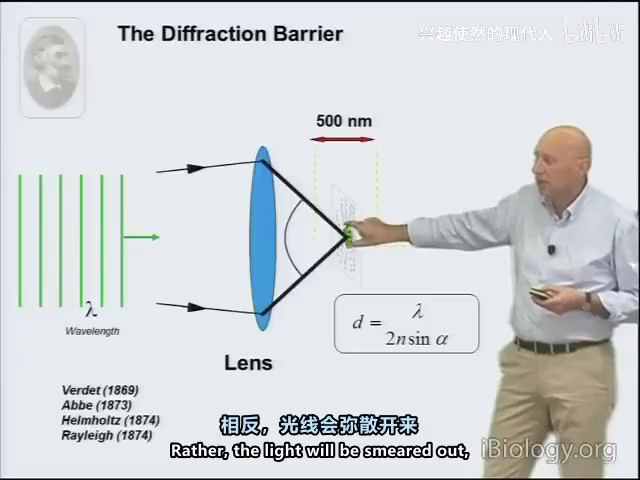
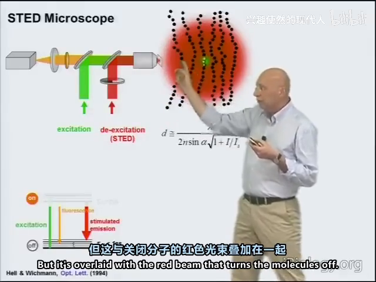
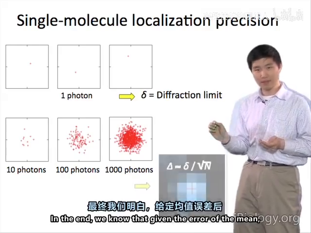
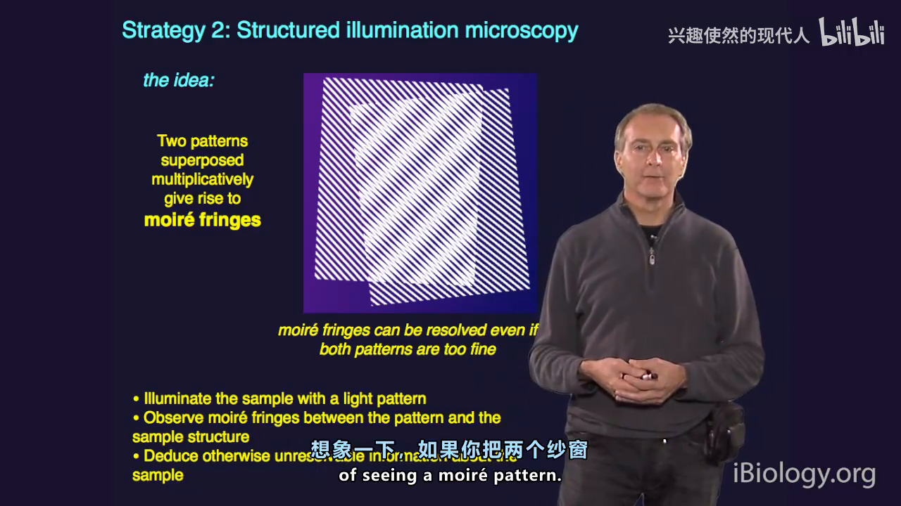
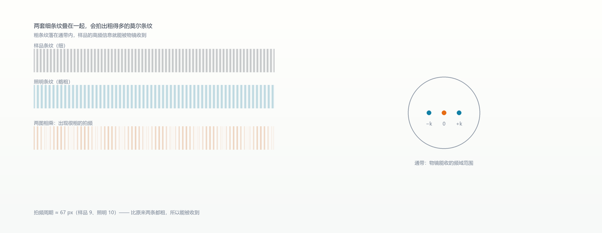

09 超分辨：三条拆天花板的路
一句话：衍射极限 d≈0.61λ/NA 把普通显微镜卡在 ~200 nm；三条路各拆一块砖——缩激发斑（STED）、靠统计定位（PALM/STORM）、用条纹把高频搬进通带（SIM）。
9.1 先记住天花板
透镜无法把波聚成几何点，焦斑 ≈ 200 nm；阿贝判据 d = λ/(2NA)，低 NA 时可达 300–500 nm。

9.2 STED：用一束"擦除光"把斑缩小
- 不缩激发斑，而是在它上面叠一束红移的环形光（甜甜圈）；
- 受激辐射把外围分子打回基态，只留环心可发光；
- 甜甜圈由厚度渐变的相位片整形高斯光得到；
- 修正公式 d ≈ λ / (2NA·√(1+I/I_sat))——损耗光越强，有效 PSF 越窄，原理上不封顶。

代价是功率：损耗光需 10⁶ W/cm²，短波长尤伤样品。
9.3 PALM/STORM：突破靠统计，不靠光学
单分子像仍是衍射斑（半高宽约 300 nm 级），光学上无法再小；但轮廓已知，可以拟合质心：
- 弱激活光稀疏点亮一小批分子；
- 单分子斑拟合质心，定出 xy；
- 关闭/漂白，换下一批，累积重建。
精度 ∝ 1/√N：红染料约 6000 光子 → ~5 nm；理想探针 10⁵ → 1 nm。

实测簇半高宽 24 nm，侧向 10–20 nm，比衍射极限好一个数量级。三维靠斑形编码 z（柱面透镜），xy 20–30 nm、z 50–70 nm。
9.4 SIM：莫尔条纹把高频搬进来
- 正弦条纹照明与样品结构相乘，产生更粗的拍频（莫尔条纹）；
- 频域看：条纹是三个点，相乘 = 频谱被平移复制三份，两份本来在通带外；
- 每方向 3 张、相位差 120°，代数解出；转 2–3 个方向铺满频域；
- 条纹取到截止极限 → 频域扩 2 倍 → 分辨率 ~2×，约 100 nm。


线性 SIM 封顶 2×；染料饱和生谐波 = 饱和 SIM，可达 40–50 nm，代价是 8 个方向和强漂白。
9.5 三者怎么选
| 需求 | STED | PALM/STORM | SIM |
|---|---|---|---|
| 分辨率 | 20–50 nm | 10–20 nm | ~100 nm |
| 速度 | 快（逐点扫） | 慢（数千帧） | 中（9–15 张/帧） |
| 光毒 | 最高 | 最低 | 温和 |
| 探针 | 需受激辐射染料 | 需光切换探针 | 普通染料即可 |
| 活细胞 | 可以 | 勉强 | 适合 |
本章自测
- STED 为什么能突破衍射极限？它没有缩小的"激发斑"为什么仍然有效？
- PALM 的 10 nm 精度来自哪里？为什么不能靠"更小的镜头"实现？
- SIM 的"2 倍"是怎么算出来的？饱和 SIM 又为什么能到 40–50 nm？
回看：P38（38:35）、P39（27:18）、P40（25:32）。